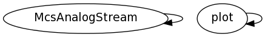

Master index
Index for +McsHDF5/@McsAnalogStream
Dependency Graph for +McsHDF5/@McsAnalogStream

Generated on Tue 04-Mar-2014 14:15:59 by
m2html
© 2005
 Master index
Master index Master index
Master index